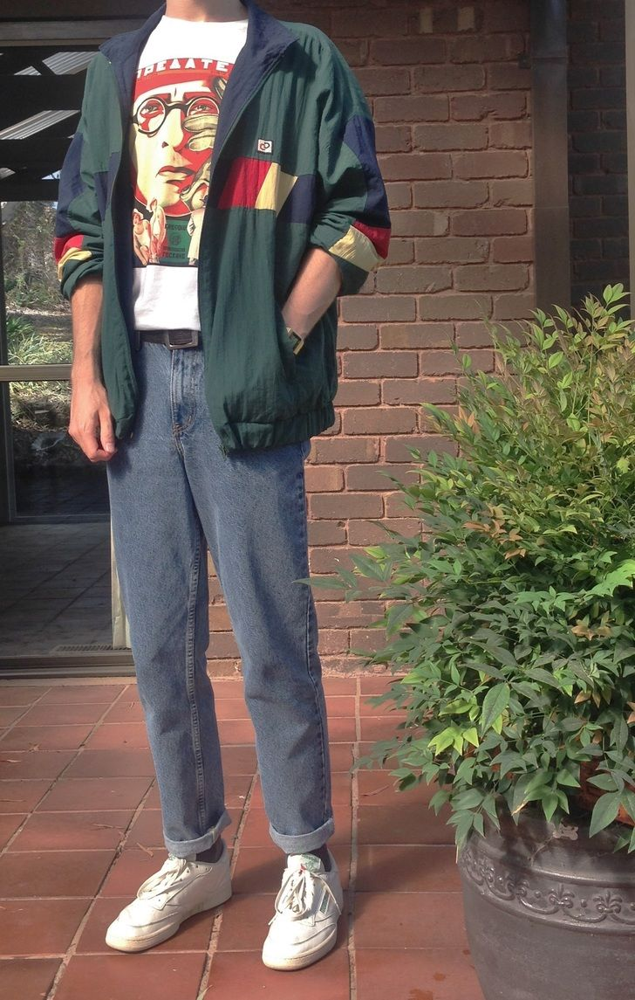
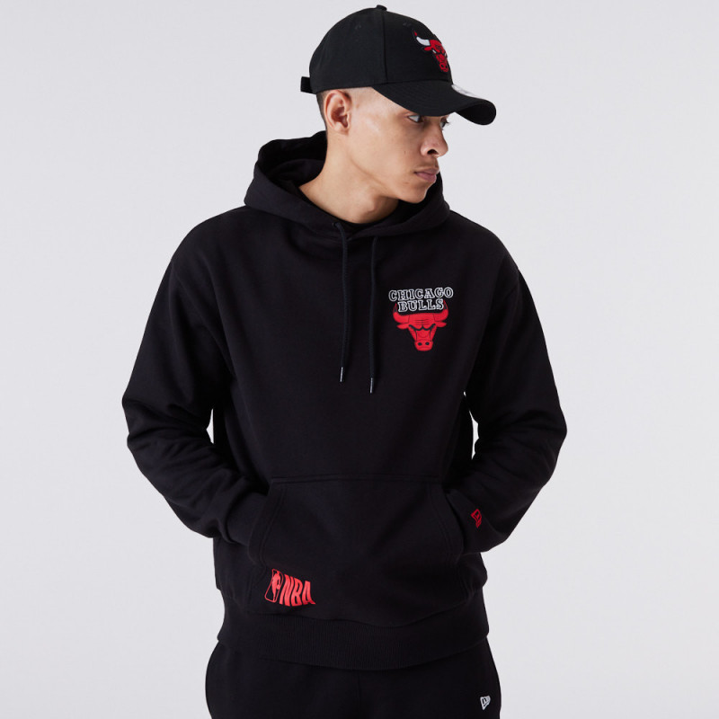
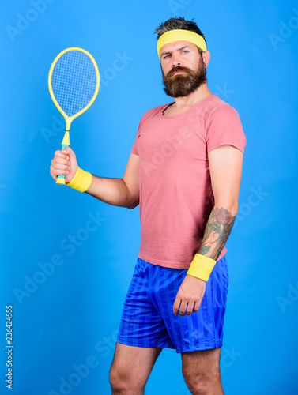

Modern Classic
A modern classic outfit is a timeless, sophisticated style that combines traditional pieces with modern touches. This may include a well-tailored blazer or dress, paired with minimalist accessories and sleek footwear.
Neutral colors such as black, white, and beige are often featured in modern classic outfits, giving a clean and refined appearance. The style emphasizes simplicity and quality over trendiness, making it versatile for various occasions and suitable for people of all ages. Overall, a modern classic outfit exudes elegance and confidence, making it a go-to choice for many fashion-conscious individuals.
90s hipster

A 90s hipster outfit is a vintage-inspired style that features elements of 90s fashion, often characterized by oversized clothing, flannel shirts, and ripped jeans. The style also includes accessories such as bucket hats, sunglasses, and chunky sneakers. 90s hipster fashion is a nod to the grunge movement of the decade, with an emphasis on individuality and non-conformity. This style has experienced a resurgence in recent years, with many fashion enthusiasts incorporating 90s hipster elements into their wardrobe for a unique, retro look.
Hoodies

A hoodie outfit is a casual, comfortable style that typically includes a hooded sweatshirt, often made of cotton or fleece, and paired with jeans, joggers, or leggings. Hoodies are versatile and can be worn with or without a jacket, making them suitable for various weather conditions. They also come in a range of colors, designs, and patterns, allowing for personalization and style expression. Overall, a hoodie outfit is a popular, laid-back look that is perfect for everyday wear
sport outfit

A man's sports outfit typically consists of athletic wear designed for comfort and performance during physical activity. This may include a moisture-wicking shirt or tank top, shorts or pants with breathable fabric and stretchy materials, and athletic shoes with good traction and support. Depending on the sport or activity, additional gear such as gloves, knee pads, or helmets may also be necessary. Overall, a man's sports outfit should allow for freedom of movement and temperature regulation to optimize performance and reduce the risk of injury.